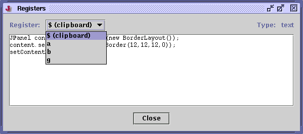

A register is place where you can save a string or caret position for later use. Each register has a single-character name and can contain a string or a caret position. The number of registers is limited by how many keys can be typed on your keyboard.
All register commands except for View Registers grab the next character entered at the keyboard and use that as the register to operate on. So to copy the selection to register X, you would type Control-R Control-C X.
Registers are global to the editor; all buffers and views share the same set. Registers are not saved across editing sessions.
Edit>Registers>Cut to Register (keyboard equivalent: Control-R Control-X) reads the next character entered at the keyboard, and copies the selected text to that register, removing it from the buffer.
Edit>Registers>Copy to Register (keyboard equivalent: Control-R Control-C) reads the next character entered at the keyboard, and copies the selected text to that register, leaving it in the buffer.
Edit>Registers>Append to Register (keyboard equivalent: Control-R Control-C) reads the next character entered at the keyboard, and appends the selected text to that register, leaving the original text in the buffer. This can be to collate distinct text strings from several places.
Edit>Registers>Paste from Register (keyboard equivalent: Control-R Control-V) reads the next character entered at the keyboard, and replaces the selection with the contents of that register. Every time you paste from a register, the pasted text is added to the list in the Edit>Paste Previous dialog box; see the section called The Clipboard in Chapter 4.
The register $ is an alias for the clipboard; so copying, pasting or cutting to that register has the same effect as using the clipboard commands in the Edit menu (Cut, Copy, Paste).
Edit>Registers>Save Caret to Register (keyboard equivalent: Control-T) reads the next character entered at the keyboard, and saves the current buffer name and caret position to that register. Because the buffer name is saved in caret registers, you can use them to quickly flip between multiple buffers.
Edit>Registers>Go to Register (keyboard equivalent: Control-Y) reads the next character entered at the keyboard, switches to the buffer name saved in that register (opening it if necessary), and moves the caret to the saved position.
Edit>Registers>Select to Register (keyboard equivalent: Control-U) reads the next character entered at the keyboard, and creates a selection from the caret position to the offset specified in that register. Keep in mind that if the register points to a different buffer, the selection may be meaningless.
Edit>Registers>Swap Caret with Register (keyboard equivalent: Control-K) reads the next character entered at the keyboard, and swaps the caret position and current buffer with that entered in the register. If invoked repeatedly, it can be used to flip between two buffers and/or caret positions.
Note: Caret positions cannot be saved to the $ (clipboard) register.
Registers can also be used to store file names to visit. Internally, jEdit makes no distinction between a file name and string register; so for example, you can paste a filename register into a buffer to get the file's name.
Edit>Registers>Save Filename to Register (keyboard equivalent: Control-R Control-F) reads the next character entered at the keyboard, and saves the current buffer's path name to that register.
Edit>Registers>Go to Register (keyboard equivalent: Control-Y) reads the next character entered at the keyboard, and opens the buffer named by the contents of that register. This is the same command used to go to a caret register.
Edit>Registers>View Registers (keyboard equivalent: F6) shows a dialog box with a scrollable list of all defined registers.
The contents of string registers are displayed as-is. For caret registers, the file name and stored caret position is displayed.
Currently, it is not possible to change or add registers in this dialog box; use the register commands instead.
Figure 5-5. The View Registers dialog box
